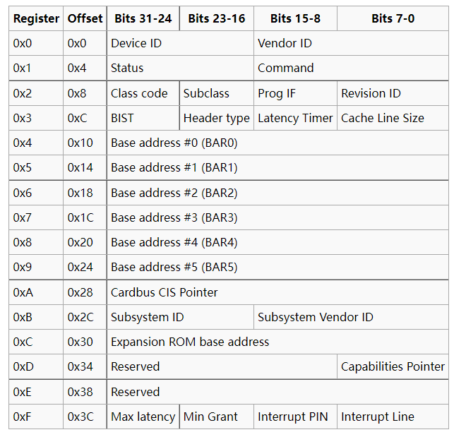
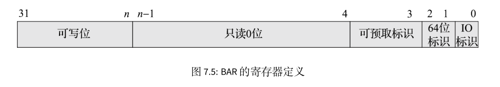
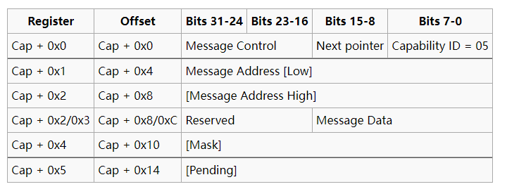

pci设备探测
在rcore中，为了在内核中接入文件系统，添加了块设备到模拟的机器上，但qemu模拟的loongarch机器上似乎无法使用virtio-blk-device设备，因此我们选择使用STATA硬盘模拟，并添加了Ahci协议。在qemu的启动项中需要添加相应的命令
@qemu-system-loongarch64 \
-m 1G \
-smp 1 \
-bios $(BOOTLOADER) \
-kernel $(KERNEL_ELF) \
-vga none -nographic \
-drive file=$(FS_IMG),if=none,format=raw,id=x0 \
-device ahci,id=ahci0 \
-device ide-hd,drive=x0,bus=ahci0.0
PCI总线的全称是Peripheral Component Interconnect，也就是外围设备互联总线，PCI总线是一种共享总线，总线上的设备分时共享这条总线。其简易的示意图如下所示:

对于OS的开发者来说，我们需要做的就是获取PCI总线的设备，并对相应的设备完成正确的配置。
在 PCI 协议下，IO 的系统空间分为三个部分：配置空间、IO 空间和 Memory 空间。配置空间存储设备的基本信息，主要用于设备的探测和发现；IO 空间比较小，用于少量的设备寄存器访问；Memory 空间可映射的区域较大，可以方便地映射设备所需要的大块物理地址空间。由于PCI支持设备即插即用，所以PCI设备不占用固定的内存地址空间或I/O地址空间，而是由操作系统决定其映射的基址。系统加电时，BIOS检测PCI总线，确定所有连接在PCI总线上的设备以及它们的配置要求，并进行系统配置。所以，所有的PCI设备必须实现配置空间，从而能够实现参数的自动配置，实现真正的即插即用。
对于 X86 架构来说，IO 空间的访问需要使用 IO 指令操作，Memory 空间的访问则需要使用通常的 load/store 指令操作。而对于 MIPS 或者 LoongArch 这种把设备和存储空间统一编址的体系结构来说，IO 空间和 Memory 空间没有太大区别，都使用 load/store 指令操作。IO 空间与 Memory 空间的区别仅在于所在的地址段不同，对于某些设备的 Memory 访问，可能可以采用更长的单次访问请求。例如对于 IO 空间，可以限制为仅能使用字访问，而对于 Memory 空间，则可以任意地使用字、双字甚至更长的 Cache 行访问。
PCI总线规范定义的每个设备的配置空间总长度为256个字节，配置信息按一定的顺序和大小依次存放。前64个字节的配置空间称为配置头，对于所有的设备都一样，配置头的主要功能是用来识别设备、定义主机访问PCI卡的方式（I/O访问或者存储器访问，还有中断信息）。其余的192个字节称为本地配置空间（设备有关区），主要定义卡上局部总线的特性、本地空间基地址及范围等。每个设备的配置空间中的地址偏移由总线号、设备号、功能号和寄存器号的组合得到，通过对这个组合的全部枚举，可以很方便地检测到系统中存在的所有设备。
| Bit 31 | Bits 30-24 | Bits 23-16 | Bits 15-11 | Bits 10-8 | Bits 7-0 |
|---|---|---|---|---|---|
| addr | addr | Bus Number | Device Number | Function Number | Register Offset |
256字节的寄存器分布如下所示:

厂商识别号（Vendor ID）与设备识别号（Device ID）的组合是唯一的，由专门的组织进行管理。每一个提供 PCI 设备的厂商都应该拥有唯一的厂商识别号，以在设备枚举时正确地找到其对应的驱动程序。其中class code 和subclass字段合起来可以识别出这个设备的具体类型，比如说块设备或者是网卡设备。
访问设备配置空间有两种方式，x86下通常会使用I/O端口进行访问，在loongarch下我们使用MMIO方式访问，查看qemu的源代码可以知道配置空间的基地址为0x2000_0000，我们需要将上述地址偏移+基地址才能得到设备配置空间。在配置空间中，并没有设备本身功能上所使用的寄存器。这些寄存器实际上是由可配置的 IO 空间或 Memory 空间来索引的,配置空间中存在 6 组独立的基址寄存器（Base Address Registers，简称 BAR）。这些 BAR 一方面用于告诉软件该设备所需要的地址空间类型及其大小，另一方面用于接收软件给其配置的基地址。
BAR 的寄存器定义如下图所示，其最低位表示该 BAR 是 IO 空间还是 Memory 空间。BAR 中间有一部分只读位为 0，正是这些 0 的个数表示该 BAR 所映射空间的大小，也就是说 BAR 所映射的空间为 2 的幂次方大小。BAR 的高位是可写位，用来存储软件设置的基地址

对 PCI 设备的探测和驱动加载是一个递归调用过程，大致算法如下:
- 将初始总线号、初始设备号、初始功能号设为 0
- 使用当前的总线号、设备号、功能号组成一个配置空间地址，使用该地址，访问其 0 号寄存器，检查其设备号。
- 如果读出全 1 或全 0，表示无设备。
- 如果该设备为有效设备，检查每个 BAR 所需的空间大小，并收集相关信息。
- 检测其是否为一个多功能设备(Header Type )，如果是则将功能号加 1 再重复扫描，执行第 2 步。
- 如果该设备为桥设备，则给该桥配置一个新的总线号，再使用该总线号，从设备号 0、功能号 0 开始递归调用，执行第 2 步。
- 如果设备号非 31，则设备号加 1，继续执行第 2 步；如果设备号为 31，且总线号为 0，表示扫描结束，如果总线号非 0，则退回上一层递归调用。
为了完成PCI设备扫描，我们引入了pci库来简化实现，原来的库使用x86结构下的端口进行访问，因此我们需要将部分实现修改为使用MMIO方式访问
#![allow(unused)] fn main() { #[derive(Debug, Copy, Clone, PartialEq, Eq)] pub enum CSpaceAccessMethod { MemoryMapped, } }
在访问配置空间的定义中，我们删除掉了I/O访问方式
#![allow(unused)] fn main() { /// Returns a value in native endian. pub unsafe fn read32<T: PortOps>(self, _ops: &T, loc: Location, offset: u16) -> u32 { debug_assert!( (offset & 0b11) == 0, "misaligned PCI configuration dword u32 read" ); let addr = loc.encode() + (offset as usize); match self { CSpaceAccessMethod::MemoryMapped => { let addr = addr as *const u32; addr.read_volatile() } } } pub unsafe fn write32<T: PortOps>(self, _ops: &T, loc: Location, offset: u16, val: u32) { debug_assert!( (offset & 0b11) == 0, "misaligned PCI configuration dword u32 read" ); let addr = loc.encode() + (offset as usize); match self { CSpaceAccessMethod::MemoryMapped => { let addr = addr as *mut u32; addr.write_volatile(val) } } } }
在读取寄存器值的部分，直接访问内存而不通过端口。
#![allow(unused)] fn main() { #[derive(Debug, Copy, Clone, PartialEq, Eq)] pub struct Location { base_addr: usize, //base address of the device pub bus: u8, pub device: u8, pub function: u8, } impl Location { #[inline(always)] fn encode(self) -> usize { self.base_addr | ((self.bus as usize) << 16) | ((self.device as usize) << 11) | ((self.function as usize) << 8) } } }
在配置空间偏移地址的定义中，也需要根据MMIO方式加入基地址。根据上文给出的构造方式完成偏移地址的构建。
扫描pci的代码如下:
#![allow(unused)] fn main() { for dev in unsafe { scan_bus( &UnusedPort, CSpaceAccessMethod::MemoryMapped, PCI_CONFIG_ADDRESS, ) } { info!( "pci: {:02x}:{:02x}.{} {:#x} {:#x} ({} {}) irq: {}:{:?}", dev.loc.bus, dev.loc.device, dev.loc.function, dev.id.vendor_id, dev.id.device_id, dev.id.class, dev.id.subclass, dev.pic_interrupt_line, dev.interrupt_pin ); dev.bars.iter().enumerate().for_each(|(index, bar)| { if let Some(BAR::Memory(pa, len, _, t)) = bar { info!("\tbar#{} (MMIO) {:#x} [{:#x}] [{:?}]", index, pa, len, t); } else if let Some(BAR::IO(pa, len)) = bar { info!("\tbar#{} (IO) {:#x} [{:#x}]", index, pa, len); } }); } }
设备需要通过中断与CPU通讯，在配置空间中的interrupt line提供了设备使用的IRQ,但我们不使用这种方法，而是需要启用MSI中断，loongarch的中断机制在后续会进行介绍。在PCI中，MSI中断是可选功能，因此需要在配置空间的能力链表中查询，能力链表的寄存器如下所示

如果低8为寄存器的值为0x5，说明设备支持MSI中断。在知道设备支持MSI中断后下一步就是去启用MSI中断。这需要通过设置上图中message control寄存器，其定义如下:

第0位控制启用MSI中断，第1-3位设置设备最多使用中断的数量，本实验中默认为1，第4-6位设置设备允许使用 的中断数量，这里也是1。具体的设置在下节中设置STAT设备有介绍。